Création d'un produit imaginaire et réalisation de son site web promotionnel.
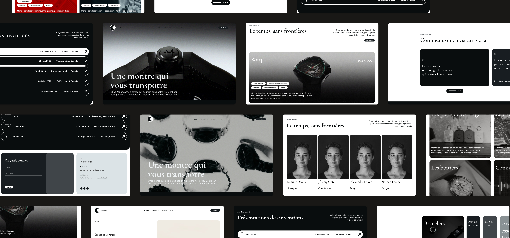
Nous avons utilisé l'IA pour la création de contenu et pour nous aider à corriger le code PHP.
Marathon créatif de 36 heures réunissant 44 participants en 11 équipes pour concevoir un site web dynamique à partir d’une thématique imposée.
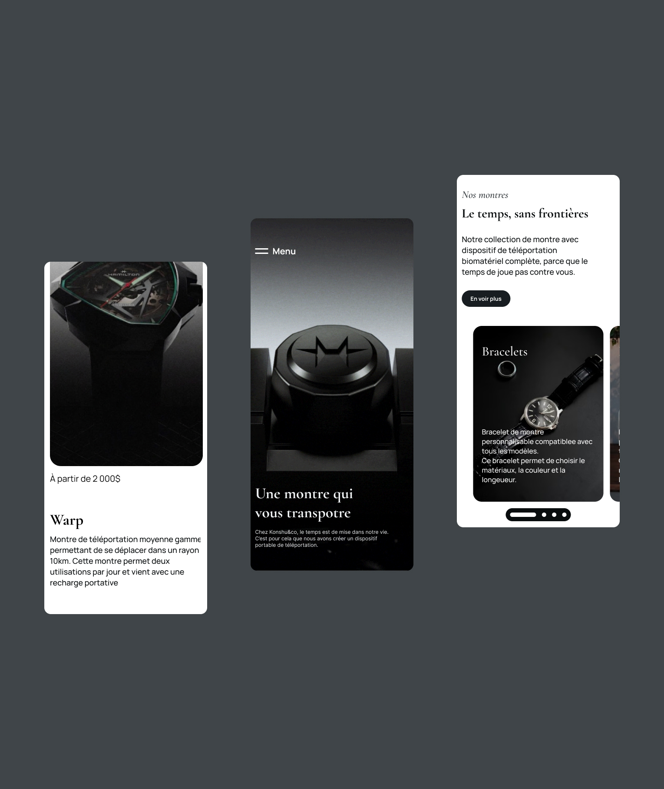
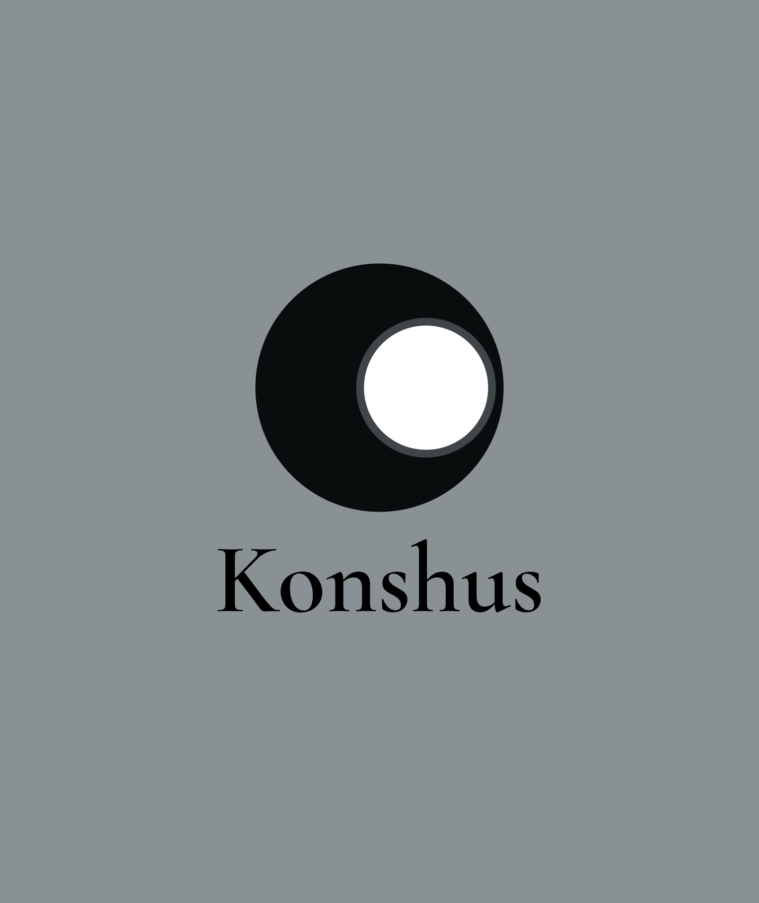
Concevoir un site web fonctionnel et visuellement cohérent en équipe, en répondant à un thème imposé et en respectant les contraintes de temps du WebJam 2026.
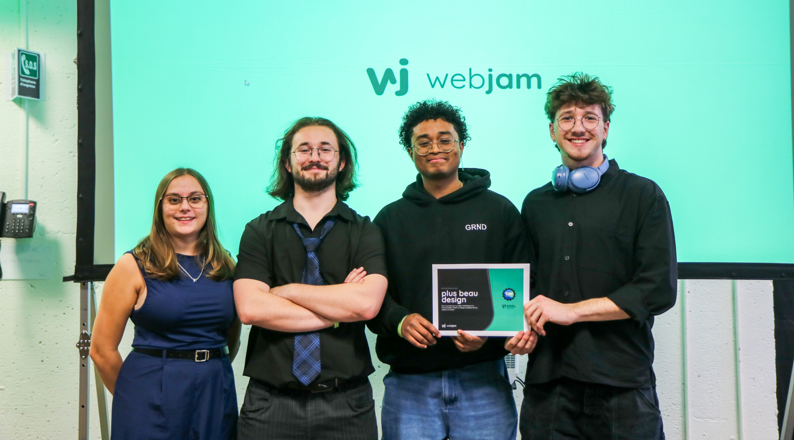
Les différents outils, logiciels et techniques utilisés pour ce projet.
Type
Outil
Description
Je suis parti sur une palette monochromatique pour renforcer l’aspect luxueux du site. Les coins arrondis et le système de cartes permettent de créer une interface cohérente tout en facilitant la réutilisation des composants.
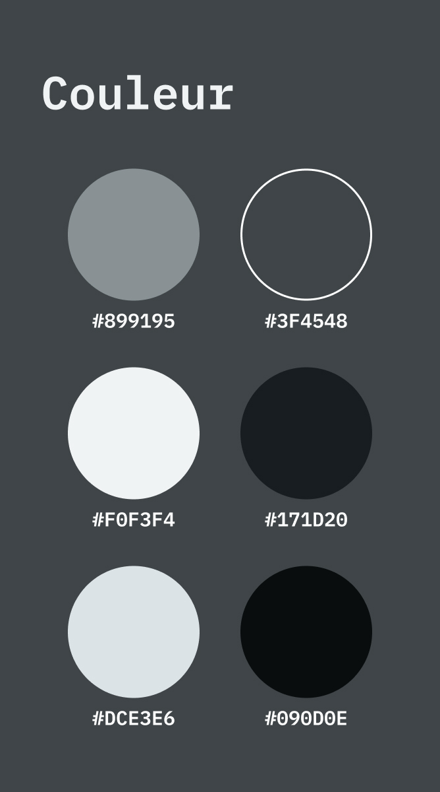
Légende
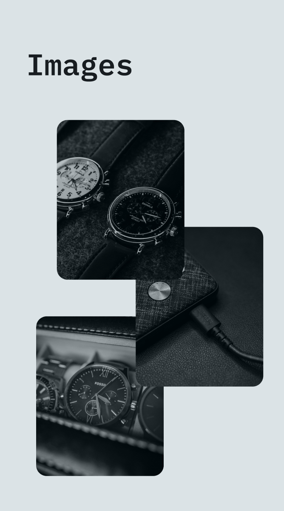
Légende
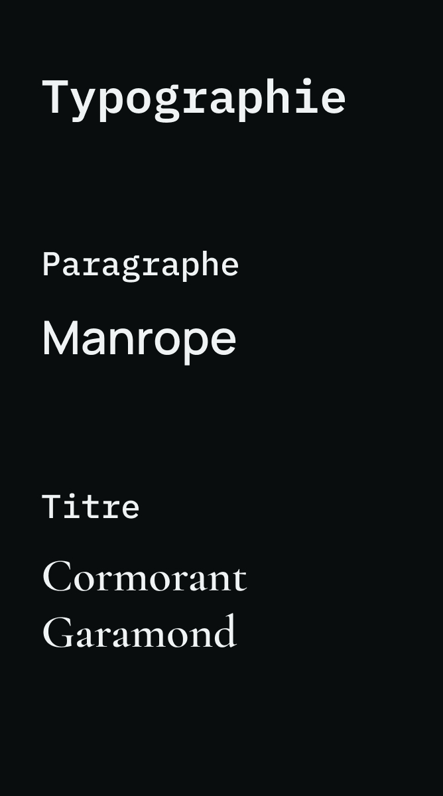
Légende
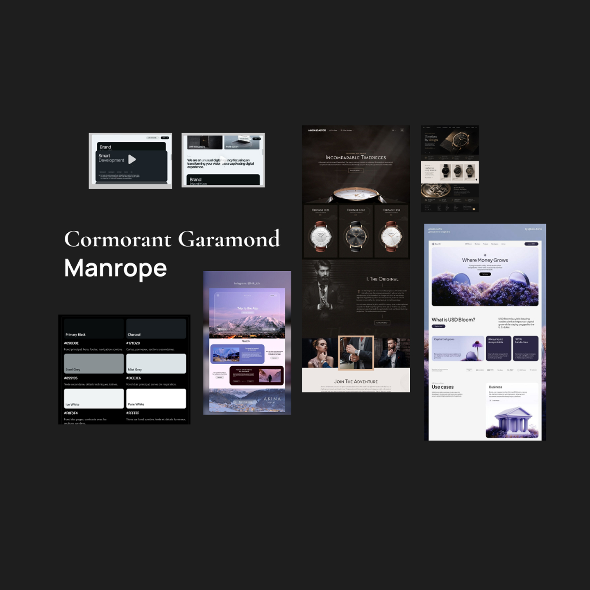
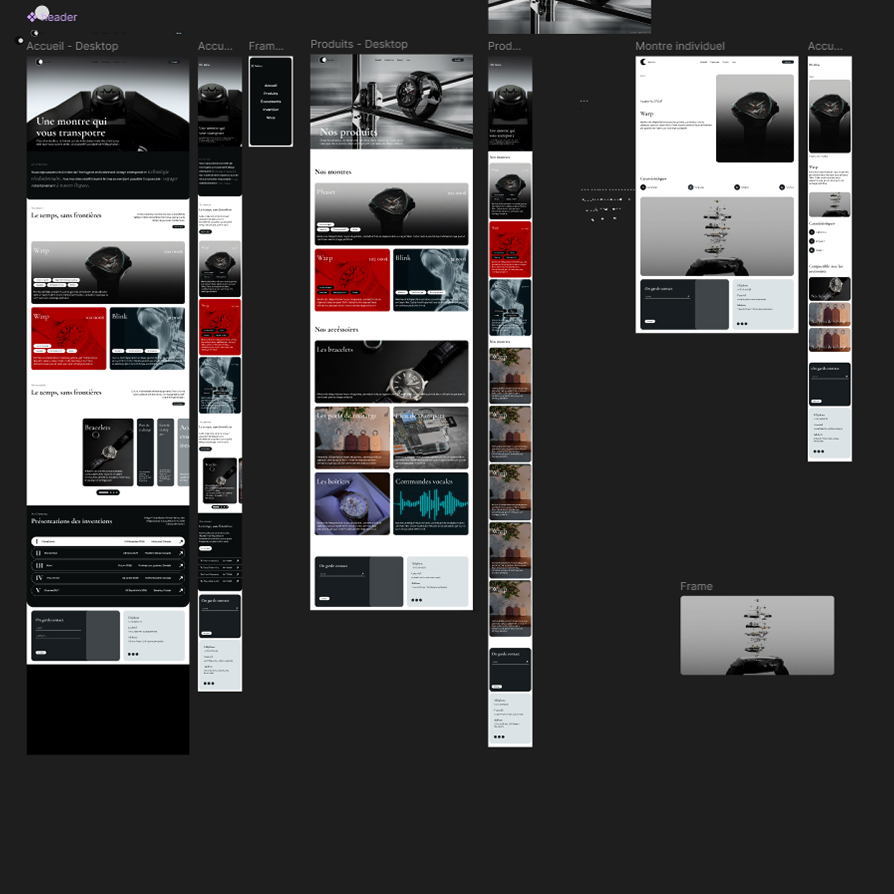
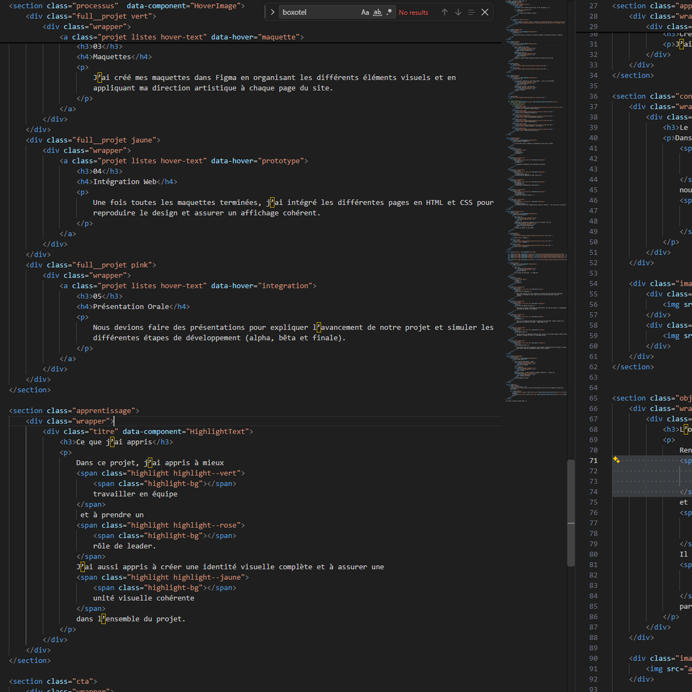
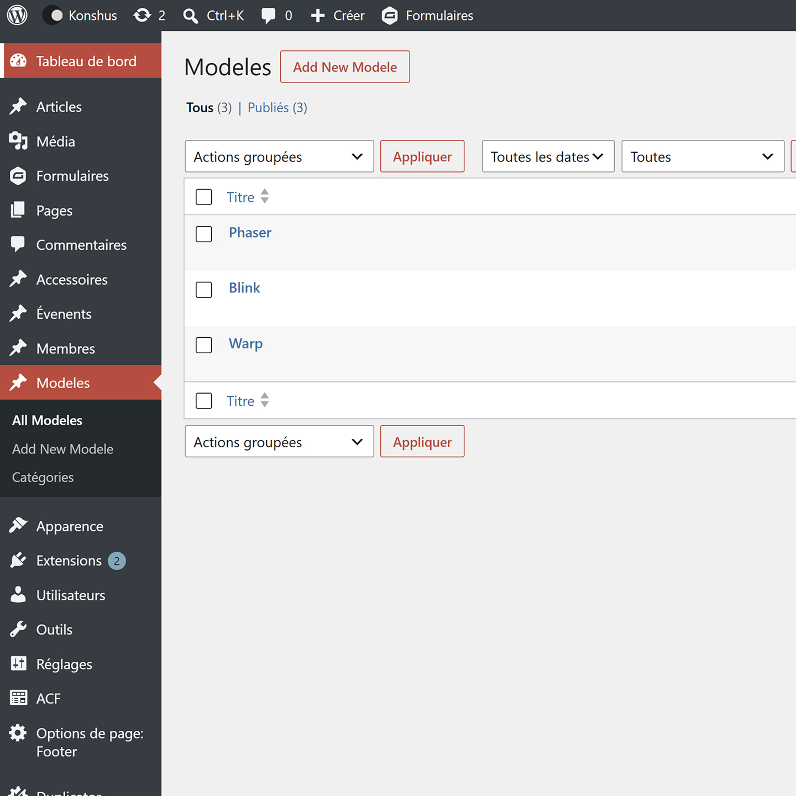
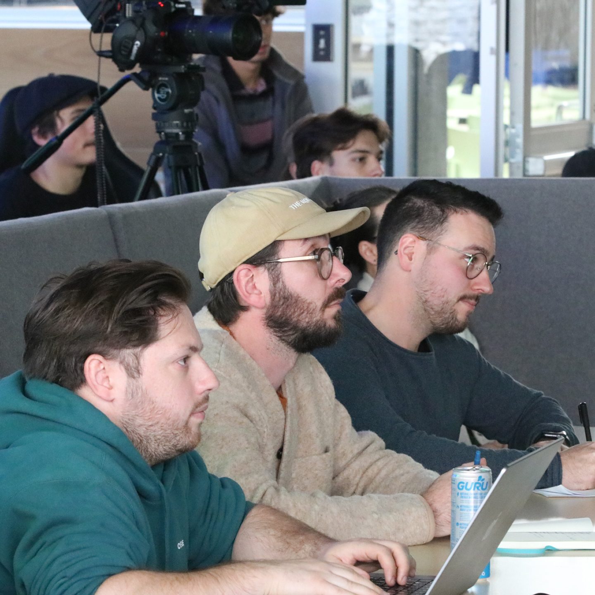
Voici les 5 étapes majeures qui ont mené à l’achèvement de ce projet.
Étape
Titre
Description
J’ai appris à mieux gérer mon temps durant ces 36 heures, à communiquer efficacement avec mes coéquipiers et à m’adapter rapidement aux imprévus pour atteindre notre objectif commun.
Ce projet a été réalisé dans le cadre de mon portfolio afin de créer une identité visuelle qui représente.